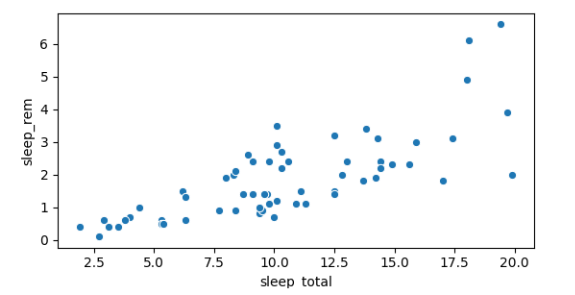
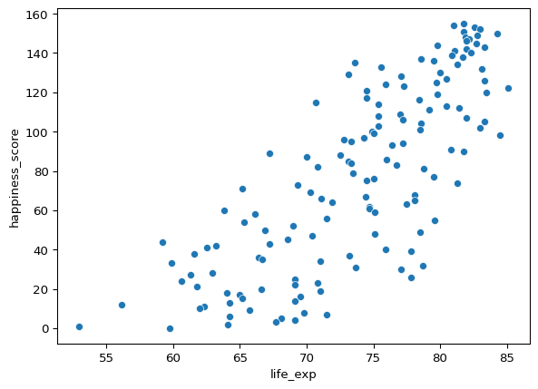
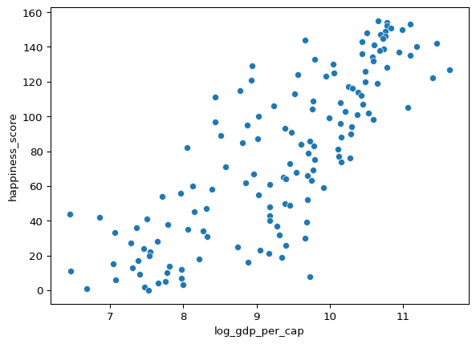
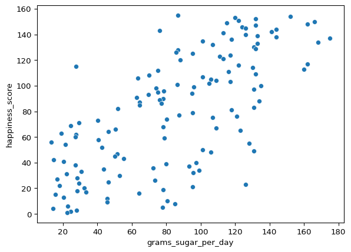

import seaborn as sns
sns.scatterplot(x='sleep_total', y='sleep_rem', data=msleep)
plt.show()Correlación y diseño de experimentos
En este capítulo, aprenderás a cuantificar la fuerza de una relación lineal entre dos variables, y explorarás cómo las variables de confusión pueden afectar a la relación entre otras dos variables. También verás cómo el diseño de un estudio puede influir en sus resultados, cambiar la forma en que deben analizarse los datos y afectar potencialmente a la fiabilidad de tus conclusiones.
Correlación
Realción entre dos variables

- x = variable explicativa o independiente.
- y = variable de respuesta o dependiente.
Coeficiente de correlación
Cuantifica la relación lineal entre dos variables.
Es un múmero entre -1 y 1.
La magnitud corresponde a la fuerza de la relación.
Signo (+ o -) corresponde a la dirección de la relación.
Magnitud = Fuerza de la relación
0.99 (Muy fuerte relación)

0.75 (Fuerte relación ) | 0.56 (moderada relación) | |  |
|  |
|0.21 (débil relación)

0.04 (sin relación)

- Conocer el valor de
xno nos dice nada acerca dey.
- Conocer el valor de
Signo = Dirección
0.75: Como xincrementayincrementa-0.75: Como xincrementaydecrece

Visualización de relaciones

- Añadir una linea de tendencia
import seaborn as sns
sns.lmplot(x='sleep_total', y='sleep_rem', data=msleep, ci=None)
plt.show()
- Calcular el coeficiente de correlación entre dos series
msleep['sleep_total'].corr(msleep['sleep_rem'])msleep['sleep_rem'].corr(msleep['sleep_total'])Muchas formas de calcular la correlación
La usada en el curso: Correlación producto momento de Pearson (\(r\))
Es la más común
\(\bar{x} = \text{media de } x \\\)
\(\sigma_x = \text{desviación estandar de } x\)
\[\begin{align*} r &= \sum_{i=1}^{n} \frac{(x_i - \bar{x})(y_i - \bar{y})}{\sigma_x \times \sigma_y} \end{align*}\]
Variaciones en esta fórmula:
Kendall’s tau
Spearman’s rho
Adivina la correlación
¿Cuál de las siguientes afirmaciones NOT es verdadera sobre la correlación?
Relaciones entre variables
En este capítulo, trabajarás con un conjunto de datos world_happiness que contiene los resultados de 2019 World Happiness Report. El informe puntúa a diferentes países en función de lo felices que son sus habitantes. También clasifica a cada país en función de diversos aspectos sociales, como el apoyo social, la libertad, la corrupción y otros. El conjunto de datos también incluye el GDP per cápita y la esperanza de vida de cada país.
En este ejercicio, examinarás la relación entre la esperanza de vida de un país (life_exp) y la puntuación de felicidad (happiness_score) tanto visual como cuantitativamente. seaborn como sns, matplotlib.pyplot como plt y pandas como pd están cargados y world_happiness está disponible.
import pandas as pd
import numpy as np
import matplotlib.pyplot as plt
import seaborn as snsworld_happiness = pd.read_csv('./data/world_happiness.csv')
print(world_happiness.head()) Unnamed: 0 country social_support freedom corruption generosity \
0 1 Finland 2.0 5.0 4.0 47.0
1 2 Denmark 4.0 6.0 3.0 22.0
2 3 Norway 3.0 3.0 8.0 11.0
3 4 Iceland 1.0 7.0 45.0 3.0
4 5 Netherlands 15.0 19.0 12.0 7.0
gdp_per_cap life_exp happiness_score
0 42400 81.8 155
1 48300 81.0 154
2 66300 82.6 153
3 47900 83.0 152
4 50500 81.8 151 Instrucciones:
Crea un diagrama de dispersión de
happiness_scorefrente alife_exp(sin línea de tendencia) utilizandoseaborn.Muestra el gráfico.
# Create a scatterplot of happiness_score vs. life_exp ando show
sns.scatterplot(x='life_exp', y='happiness_score', data=world_happiness)
# Show plot
plt.show()
Crea un diagrama de dispersión de
happiness_scorefrente alife_expcon una línea de tendencia lineal utilizandoseaborn, estableciendocienNone.Muestra el gráfico.
# Create scatterplot of happiness_score vs life_exp with trendline
sns.lmplot(x='life_exp', y='happiness_score', data=world_happiness, ci=None)
# Show plot
plt.show()
Pregunta
Según el diagrama de dispersión, cuál es la correlación más probable entre life_exp y happiness_score?
Respuestras posibles
- Calcula la correlación entre
life_expyhappiness_score. Guárdala comocor.
# Correlation between life_exp and happiness_score
cor = world_happiness['life_exp'].corr(world_happiness['happiness_score'])
print(cor)0.7802249053272065Los diagramas de dispersión con líneas de tendencia son una excelente manera de verificar que una relación estre dos variables es realmente lineal.
Advertencias sobre la correlación
Relaciones no lineales
- Siempre que sea posible visualizar los datos.
Transformación logaritmica
- Es posible usarla cuando hayan datos muy sesgados.
Otras transformaciones
Transformación logarítmica (
log(x))Transformación raíz cuadrada (
sqrt(x))Transformación recíproca (
1 / x)Combinations de esteas, por ejemplo:
log(x)ylog(y)sqrt(x)y1 / y
Por qué usar una transformación?
Ciertos métodos estadísticos se basan en que las variables tengan una relación lineal.
Coeficiente de correlación
Regresión lineal.
La correlación no implica causalidad.
Si
xestá correlacionada conyno significa quexcausey.Confusión
Este fenómeno puede dar lugar a correlaciones espurias.
Qué no puede medir la correlación?
Aunque el coeficiente de correlación es una forma cómoda de cuantificar la fuerza de una relación entre dos variables, dista mucho de ser perfecto. En este ejercicio, explorarás una de las advertencias sobre el coeficiente de correlación examinando la relación entre el GDP per cápita de un país (gdp_per_cap) y la puntuación de felicidad.
Instrucciones:
Crea un diagrama de dispersión
seaborn(sin línea de tendencia) que muestre la relación entregdp_per_cap(en el eje X) ylife_exp(en el eje Y).Muestra el gráfico.
# Scatterplot of gdp_per_cap and life_exp
sns.scatterplot(x='gdp_per_cap', y='life_exp', data=world_happiness)
# Show plot
plt.show()
- Calcula la correlación entre
gdp_per_capylife_expy guárdala comocor.
# Correlation between gdp_per_cap and life_exp
cor = world_happiness['gdp_per_cap'].corr(world_happiness['life_exp'])
print(cor)0.7019547642148015Pregunta
La correlación entre GDP per cápita y esperanza de vida es de 0.7. Por qué la correlación no es la mejor forma de medir la relación entre estas dos variables?
Respuestas posibles
El coeficiente de correlación no puede dar cuenta de ninguna relación que no sea lineal, independientemente de su fuerza.
Transformación de variables
Cuando las variables tienen distribuciones sesgadas, a menudo requieren una transformación para formar una relación lineal con otra variable, de modo que pueda calcularse la correlación. En este ejercicio realizarás una transformación.
Instrucciones:
- Crea un diagrama de dispersión de
happiness_scorefrente agdp_per_capy calcula la correlación entre ambos.
# Scatterplot of happiness_score vs. gdp_per_cap
sns.scatterplot(x='gdp_per_cap', y='happiness_score', data=world_happiness)
plt.show()
# Calculate correlation
cor = world_happiness['happiness_score'].corr(world_happiness['gdp_per_cap'])
print(cor)
0.7279733012222978- Añade una nueva columna a
world_happinessllamadalog_gdp_per_capque contenga el logaritmo degdp_per_cap. Crea un diagrama de dispersiónseaborndehappiness_scorefrente alog_gdp_per_capyhappiness_score. Calcula la correlación enrelog_gdp_per_capyhappiness_score.
# Create log_gdp_per_cap column
world_happiness['log_gdp_per_cap'] = np.log(world_happiness['gdp_per_cap'])
# Scatterplot of happiness_score vs. log_gdp_per_cap
sns.scatterplot(x='log_gdp_per_cap', y='happiness_score', data=world_happiness)
plt.show()
# Calculate correlation
cor = world_happiness['log_gdp_per_cap'].corr(world_happiness['happiness_score'])
print(cor)
0.8043146004918288La relación entre el PIB per cápita y la felicidad se volvió más lineal al aplicar una transformación logarítmica. Las transformaciones logarítmicas son excelentes para usar en variables con una distribución sesgada, como el PIB.
El azúcar aumenta la felicidad?
Se ha añadido una nueva columna a world_happiness llamada grams_sugar_per_day, que contiene la cantidad media de azúcar ingerida por persona y día en cada país. En este ejercicio, examinarás el efecto del consumo medio de azúcar de un país en su puntuación de felicidad.
world_happiness = pd.read_csv('./data/world_happiness_add_sugar.csv', index_col=0)
world_happiness| country | social_support | freedom | corruption | generosity | gdp_per_cap | life_exp | happiness_score | grams_sugar_per_day | |
|---|---|---|---|---|---|---|---|---|---|
| Unnamed: 0 | |||||||||
| 1 | Finland | 2 | 5 | 4.0 | 47 | 42400 | 81.8 | 155 | 86.8 |
| 2 | Denmark | 4 | 6 | 3.0 | 22 | 48300 | 81.0 | 154 | 152.0 |
| 3 | Norway | 3 | 3 | 8.0 | 11 | 66300 | 82.6 | 153 | 120.0 |
| 4 | Iceland | 1 | 7 | 45.0 | 3 | 47900 | 83.0 | 152 | 132.0 |
| 5 | Netherlands | 15 | 19 | 12.0 | 7 | 50500 | 81.8 | 151 | 122.0 |
| ... | ... | ... | ... | ... | ... | ... | ... | ... | ... |
| 129 | Yemen | 100 | 147 | 83.0 | 155 | 2340 | 68.1 | 5 | 77.9 |
| 130 | Rwanda | 144 | 21 | 2.0 | 90 | 2110 | 69.1 | 4 | 14.1 |
| 131 | Tanzania | 131 | 78 | 34.0 | 49 | 2980 | 67.7 | 3 | 28.0 |
| 132 | Afghanistan | 151 | 155 | 136.0 | 137 | 1760 | 64.1 | 2 | 24.5 |
| 133 | Central African Republic | 155 | 133 | 122.0 | 113 | 794 | 52.9 | 1 | 22.4 |
133 rows × 9 columns
Instrucciones:
Crea un diagrama de dispersión
seabornque muestre la relación entregrams_sugar_per_day(en el eje X) yhappiness_score(en el eje Y).Calcula la correlación entre
grams_sugar_per_dayyhappiness_score.
# Scatterplot of grams_sugar_per_day and happiness_score
sns.scatterplot(x='grams_sugar_per_day', y='happiness_score', data=world_happiness)
plt.show()
# Correlation between grams_sugar_per_day and happiness_score
cor = world_happiness['grams_sugar_per_day'].corr(world_happiness['happiness_score'])
print(cor)
0.6939100021829634Pregunta
Según estos datos, qué afirmación sobre el consumo de azúcar y las puntuaciones de felicidad es cierta?
Respuestas posibles
Si la correlación siempre implicara que una cosa causa la otra, la gente podría hacer cosas son sentido, como comer más azúcar para se más feliz.
Factores de confusión
Un estudio investiga la relación entre la residencia en el vecindario y la capacidad pulmonar. Los investigadores miden la capacidad pulmonar de treinta personas del vecindario A, situado cerca de una autovía, y de treinta personas del vecindario B, que no está cerca de una autovía. Ambos grupos tienen unos hábitos de consumo de tabaco y un desglose por sexos similares.
¿Cuál de los siguientes podría ser un factor de confusión en este estudio?
Respuestas posibles
Es de esperar que haya más contaminación atmosférica en el vecindario situado cerca de la autovía, lo que puede provocar una menor capacidad pulmonar.
Diseño de experimentos
- Vocabulario
- El experimento responde a la prgunta: Cuál es el efecto del tratamiento sobre la respuesta?.
- Tratamiento: Variable explicativa o independiente.
- Respuesta: Variable dependiente o de respuesta.
- Ejemplo: Cuál es el efecto de un anuncio en el número de productos comprados?
- Tratamiento: Anuncio
- Respuesta: Número de productos comprados
- El experimento responde a la prgunta: Cuál es el efecto del tratamiento sobre la respuesta?.
- Experimentos Controlados
- Los participantes son asignados aleatoriamente a los grupos de tratamiento o al grupo de control. El grupo de tratamiento recibe el tratamiento y el de control no.
- Grupo de tratamiento ve los anuncios
- El grupo de control no.
- Los grupos deben ser comparables de modo que la causalidad pueda ser inferida.
- Si los grupos no son comparables, esto podria llevar a confusión.
- Grupo de tratamiento con edad promedio de : 25
- Grupo de control con edad promedio de: 50
- La edad es un un potencial factor de confusión.
- Los participantes son asignados aleatoriamente a los grupos de tratamiento o al grupo de control. El grupo de tratamiento recibe el tratamiento y el de control no.
- El gold estándar de los experimento usará…
- Ensayo controlado aleatorio.
- Los participantes son asignados al azar al grupo de tratamiento o de control. No basado en alguna característica.
- La asignación aleatoria ayuda a asegurar que los grupos sean comparables.
- Placebo
- Se parace al tratamiento, pero no tiene efecto.
- Los participantes no sabrán a cual grupo irán.
- Doble ciego
- La persona que administra el tratamiento no conoce cual es el tratamiento real o el placebo.
- Previene el sesgo en la respuesta y/o en el análisis de resultados.
- Menos oportunidades de que haya sesgo = mas fiable sera la conclusión que el tratamiento afecta la respuesta.
- Ensayo controlado aleatorio.
- Estudios observacionales
- Los participantes no se asignan aleatoriamente a los grupos.
- Los participantes se asignan a si mismos, usualmente basado en características preexistentes.
- Muchas preguntas no son conducidas a un experimento controlado.
- No puedes forzar a alguien a fumar o tener un deseso.
- No puede hacer que alguien tengan cierto comportamiento.
- Se establece asociación no causalidad.
- Los efectos del tratamiento pueden ser confundidos por factores que llevaron a ciertas personas al grupo de control o tratamiento.
- Hay formas de controlar la confusión para obtener más conclusiones fiabiles acerca de la asociación.
- Los participantes no se asignan aleatoriamente a los grupos.
- Estudios Longitudinales vs Estudios transversales
- Estudios Longitudinales
- Se sigue a los mismos participantes durante un periodo de tiempo para examinar el efecto del tratamiento en la respuesta.
- El efecto de la edad en la altura no es confundida por generación.
- Son más costosos, los resultados toman tiempo.
- Estudio transversal
- Los datos de los participantes son recolectados de una sola camptura en el tiempo.
- El efecto de la edad en la altura se confunde por generación.
- Son más baratos, rápidos y mas convenientes.
- Estudios Longitudinales
Tipos de estudio
Aunque los experimentos controlados son ideales, muchas situaciones y preguntas de investigación no son propicias para un experimento controlado. En un experimento controlado, es probable que pueda inferirse la causalidad si los grupos de control y de prueba tienen características similares y no hay ninguna diferencia sistemática entre ellos. Por otra parte , la causalidad no suele inferirse de los estudios observacionales, cuyos resultados suelen interpretarse erróneamente como consecuencia de ello.
Instrucciones
- Determina si cada estudio es un experimento controlado o un estudio observacional
| Experimento Controlado | Estudio Observacional |
|---|---|
| Se comparan los síntomas de asma entre niños asignados aleatoriamente a recibir servicios profesionales de control de plagas a domicilio o educaci´øn sobre el control de plagas. | Se compara la prevalencia de enfermedades cardíacas entre veteranos con PTSD y veteranos sin PTSD. |
| Se comparan las tasas de compra entre los usuarios de un sitio de comercio electrónico que son dirigidos aleatoriamente a una nueva versión de la página de inicio o a una versión antigua. | Hace una semana, se actualizó la página de inico de un sitio de comercio electrónico. Las tasas de compra se comparan entre los usuarios que vieron las versiones antigua y nueva de la págna de inicio. |
| Se asigna aleatoriamente a los sujetos una dieta y se compara la pérdida de peso. |
Estudios longitudinales frente a estudios transversales
Una empresa fabrica termómetros y quiere estudiar la relación entre la antigüedad de un termómetro y su exactitud. Para ello, toman una muestra de 100 termómetros diferentes de distintas antigüedades y comprueban su exactitud. Son datos longitudinales o transversales?
Respuestas posibles
Selecciona una respuesta:
Se trata de un estudio transversal, ya que los investigadores no están siguiendo el mismo conjunto de termómetros a lo largo del tiempo y midiendo repetidamente su exactitud con diferentes antigüedades.